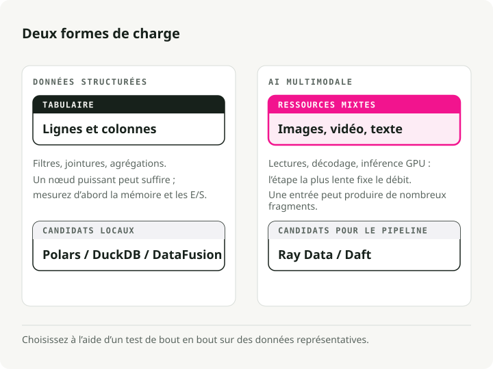
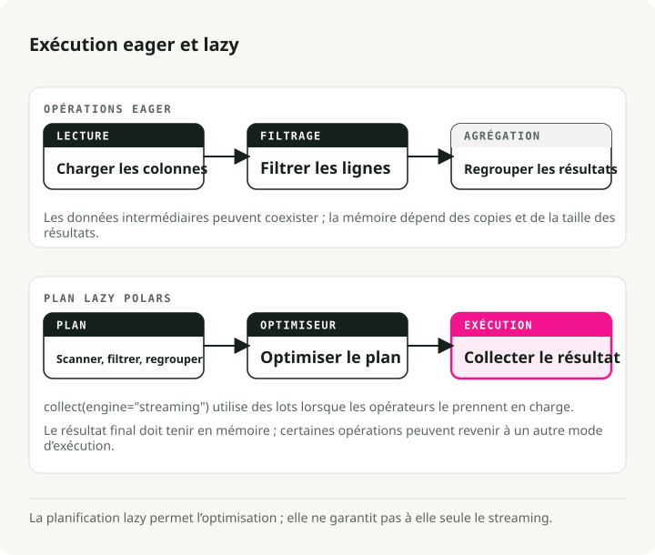
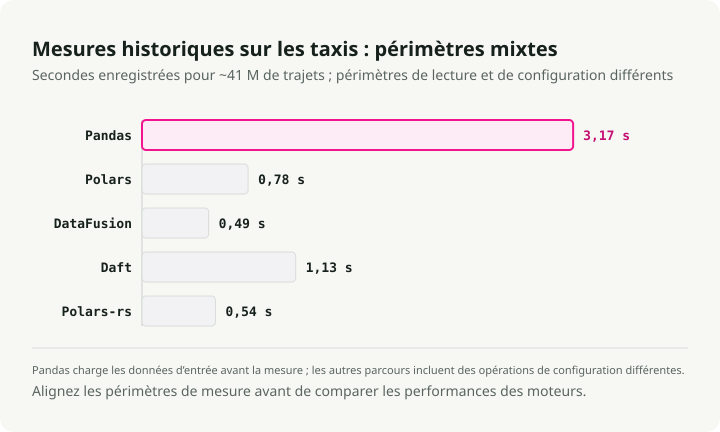
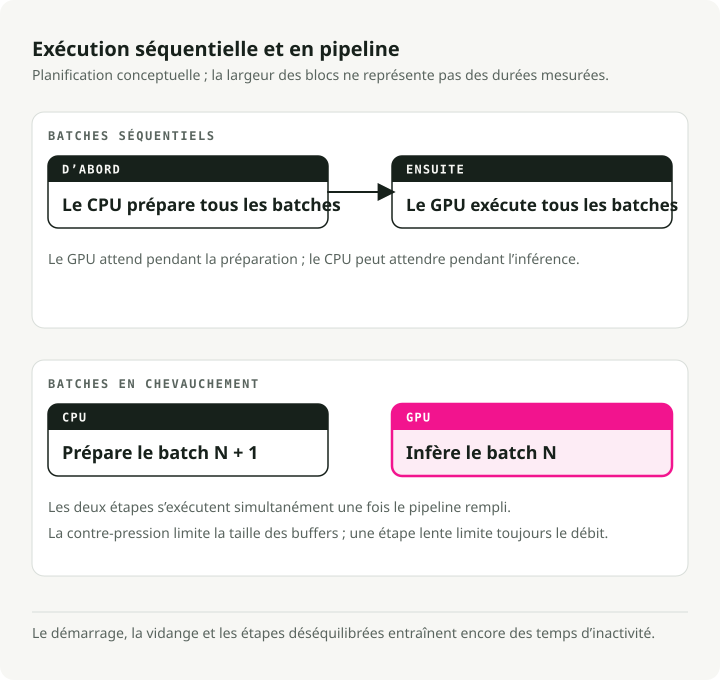
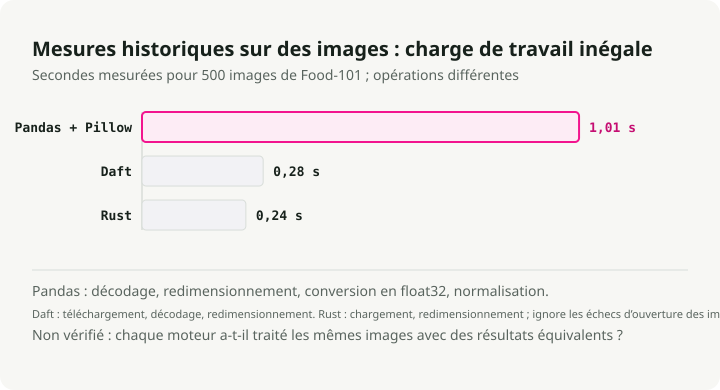
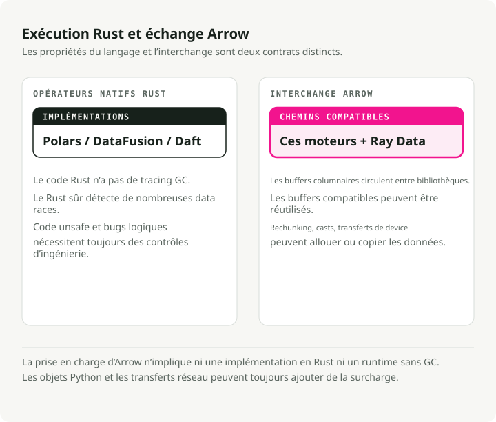
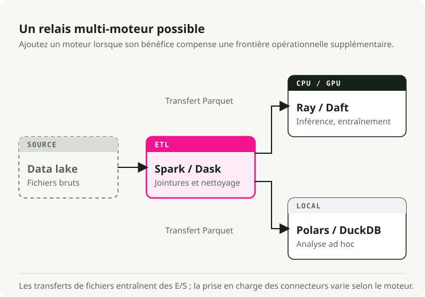
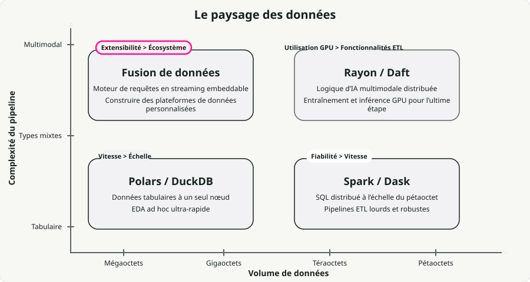

Traduction automatique
Cet article a été traduit automatiquement depuis la version originale en anglais.
Comparaison des moteurs modernes de traitement de données : Polars, DataFusion, Daft, Ray Data, Pandas et Spark
Pendant des années, Pandas s’est chargé du traitement de données tabulaires en mémoire, tandis que Apache Spark gérait les travaux distribués. Cette séparation fonctionnait bien tant que les données étaient structurées.
Aujourd’hui, les charges de travail ne sont plus toujours structurées. Les pipelines d’images, d’audio et de vidéo coexistent désormais avec ceux de type tabulaire, et avec l’introduction de l’inference sur GPU, la collecte de déchets du JVM ainsi que le GIL de Python cessent d’être des gênes pour devenir des goulets d’étranglement majeurs. C’est en grande partie pour cette raison qu’une nouvelle génération de moteurs basés sur Rust et Apache Arrow connaît un succès fulgurant.
Au cours de l’année écoulée, j’ai migré la plupart de mes pipelines monノード vers Polars, et j’ai souhaité évaluer concrètement sa performance par rapport aux autres composants de cette nouvelle stack. J’ai donc effectué des benchmarks de Polars, DataFusion, Daft, Ray Data et Spark sur des jeux de données réels : des données de trajets de taxis à New York pour le volet tabulaire, et des images du dataset Food-101 pour le volet multimodal.
Tout le code se trouve dans repoire engine-comparison-demo. Cloniez-le et exécutez les benchmarks sur votre propre matériel : vos résultats différeront des miens, et c’est justement l’objectif.
En résumé : Sur les benchmarks adaptés au marketing, les moteurs natifs de Rust offrent une accélération de 94 fois par rapport à Pandas sur un seul nœud. Pour des charges de travail réelles, les gains sont plus modérés mais stables — Polars et DataFusion constituent tous deux de bons choix par défaut. Pour les pipelines multimodaux, des moteurs en chaîne tels que Ray Data et Daft fonctionnent jusqu’à 18 fois plus rapidement que Spark, car ils maintiennent effectivement les GPU occupés. Il n’y a pas de gagnant absolu ; le choix dépend de vos données, de l’échelle de traitement et du fait que des GPU soient utilisés ou non.
Types de charges de travail de traitement de données
Les moteurs sont spécialisés, il faut donc d’abord déterminer quel type de charge de travail vous avez réellement. La principale distinction réside entre les données structurées et les données multimodales.

Données structurées ou tabulaires. Filtrage, agrégation, jointures. Goulot d’étranglement lié au CPU, généralement en mémoire. Une grande partie de ce travail s’effectue sur des clusters distribués qui n’auraient pas nécessairement eu besoin d’être distribués en premier lieu — environ 90 % des requêtes traitent moins de 1 TB de données, qui peut aujourd’hui fonctionner confortablement sur une seule machine.
IA multimodale. Images, audio, vidéo. Le traitement en temps réel dépend fortement des GPU, mais c’est le prétraitement sur CPU qui constitue la véritable limite. Les modèles d’apprentissage profond consomment des données bien plus rapidement que les CPU ne peuvent les décoder, donc sur un système standard g6.xlarge (4 cœurs CPU par GPU) : l’utilisation du GPU tombe en dessous de 20 %. L’ensemble du pipeline est finalement limité par la vitesse à laquelle on peut alimenter le GPU.
Les nouveaux moteurs ciblent ces deux objectifs. Rust leur confère de la vitesse, Arrow leur permet un partage de données sans copie entre processus, et l’exécution en flux leur permet de gérer des ensembles de données plus volumineux que la RAM.
Partie 1 : Traitement sur nœud unique
Le goulot d’étranglement de Pandas n’est pas une erreur de conception. C’est sa propre architecture. Pandas charge activement les fichiers en RAM, copie des données intermédiaires à presque chaque opération, et reste confiné à un seul thread en raison du GIL. Dans le Benchmarks PDS-H Avec un facteur d’échelle de 10, Pandas met environ 365 secondes pour traiter un ensemble de requêtes standard. Le moteur en flux continu de Polars effectue la même tâche en 3,89 secondes — soit environ 94 fois plus rapide.

Polars : Traitement de données tabulaires
Polars Il a remplacé Pandas comme outil par défaut pour les opérations ETL locales sérieuses au sein de nombreuses équipes avec lesquelles j’ai parlé. Il est écrit en Rust et utilise une exécution différée : au lieu d’exécuter chaque ligne au fur et à mesure, il construit un plan de requête, l’optimise (pushdown des prédicats, élagage de la projection, élagage des colonnes), puis l’exécute sur tous les cœurs CPU en utilisant des lots en flux continu.
L’écart s’agrandit à mesure que les données augmentent. À facteur de mise à l’échelle 100 (~100 GB), le moteur de streaming de Polars a terminé la tâche en 23,94 secondes, contre 152,27 secondes pour son propre moteur en mémoire — soit environ 6 fois plus rapide, même sur des données dépassant la capacité de la RAM. engine_comparison_examples.ipynb:
import polars as pl
# scan_parquet reads only the schema — no data loaded yet
q = (
pl.scan_parquet("yellow_tripdata_2024-01.parquet")
.filter(
(pl.col("trip_distance") > 5.0)
& (pl.col("total_amount") > 30.0)
)
.group_by("payment_type")
.agg(
pl.col("total_amount").mean().alias("avg_fare"),
pl.col("trip_distance").mean().alias("avg_distance"),
pl.len().alias("trip_count"),
)
)
# The entire plan is optimized and executed here, in parallel
result = q.collect()
La différence avec Pandas ne réside pas dans l’API, mais bien dans l’architecture. Polars construit d’abord le plan d’exécution et optimise l’ensemble du pipeline avant même de manipuler les données. filter il est transmis au lecteur Parquet, ce qui entraîne l’omission de tout groupe de lignes. Seules les colonnes mentionnées dans la requête sont téléchargées depuis le disque. Pandas ne permet pas une telle approche : chaque ligne est traitée dès sa parsing, et des copies intermédiaires apparaissent partout.
Apache DataFusion : moteur de requêtes extensible
Alors que Polars est une bibliothèque que l’on utilise directement, DataFusion c’est le moteur sur lequel vous construisez d’autres moteurs. Il fournit l’énergie nécessaire InfluxDB 3.0, GreptimeDB, ainsi que ceux d’Apple Accélérateur Comet Spark.
En novembre 2024, DataFusion est devenu le le moteur mon-nœud le plus rapide pour interroger des fichiers Parquet dans ClickBench, devançant DuckDB, chDB et ClickHouse sur le même matériel. L’équipe d’Embucket a par la suite exécuté TPC-H avec un facteur d’échelle de 1000 (~1 TB) sur une seule machine En plus de cela, c’est une valeur utile à garder en tête chaque fois que quelqu’un affirme avoir besoin d’un cluster. engine_comparison_examples.ipynb:
from datafusion import SessionContext
ctx = SessionContext()
ctx.register_parquet("taxi", "yellow_tripdata_2024-01.parquet")
# SQL executed directly against Parquet — no intermediate copies
df = ctx.sql("""
SELECT payment_type,
COUNT(*) AS trip_count,
AVG(trip_distance) AS avg_distance,
AVG(total_amount) AS avg_fare
FROM taxi
WHERE trip_distance > 5.0 AND total_amount > 30.0
GROUP BY payment_type
ORDER BY trip_count DESC
""")
result = df.to_pandas()
La force de DataFusion réside dans son modularité. Les API d’extension couvrent les catalogues personnalisés, les fournisseurs de tables, les règles d’optimisation ainsi que les plans d’exécution ; c’est pourquoi elles sont utilisées chaque fois que quelqu’un développe une plateforme de données personnalisée ou intégre un moteur de requêtes dans son propre produit.
Daft : Traitement de données multimodales
Absurde c’est celui qui prend les données multimodales au sérieux. Images, audio, vidéo, embeddings : ce sont des types réels au sein du DataFrame, et non de simples octets opaques. Pandas traite une image comme un tableau d’octets, Spark la sérialise via la JVM, mais Daft dispose d’expressions natives en Rust pour déchiffrer les images, récupérer des URL et générer des tenseurs, sans avoir recours à de boucles en Python. engine_comparison_examples.ipynb:
import daft
df = daft.read_parquet("yellow_tripdata_2024-01.parquet")
result = (
df.where(
(daft.col("trip_distance") > 5.0)
& (daft.col("total_amount") > 30.0)
)
.groupby("payment_type")
.agg(
daft.col("total_amount").mean().alias("avg_fare"),
daft.col("trip_distance").mean().alias("avg_distance"),
daft.col("trip_distance").count().alias("trip_count"),
)
.collect()
)
L’API vous semblera familière si vous connaissez Pandas, mais le moteur est identique à la pile Rust + Arrow utilisée dans Polars et DataFusion. Daft se révèle particulièrement utile lorsque les « lignes » de votre DataFrame sont des images, des PDF ou des tenseurs.
Étude de performance : Performances sur un seul nœud
J’ai exécuté les quatre moteurs, ainsi que le Rust natif via Polars-rs, sur environ 41 millions d’éléments. Trajets de taxis jaunes à New York Pour l’ensemble de l’année 2024. Les résultats complets se trouvent dans le repo de démonstration:

À cette taille (environ 660 Mo en format Parquet), n’importe quel moteur moderne affiche des performances rapides. Le chiffre spectaculaire de 94 fois plus rapide pour Polars par rapport à Pandas provient de PDS-H, un benchmark analytique synthétique — sur mon ensemble de données de 41 millions de lignes, j’ai constaté une amélioration réelle et constante par rapport à Pandas, mais loin d’une vitesse 94 fois supérieure. Le résultat le plus intéressant est que Polars, DataFusion, Daft, ainsi que la version écrite en Rust pur via Polars-rs obtiennent tous des résultats globalement similaires pour ce type de charge de travail. DataFusion devance légèrement les autres en termes de temps total de traitement. Polars reste le plus agréable à utiliser et constitue un choix solide pour un usage polyvalent.
Spark parallélise les partitions sur plusieurs cœurs, mais son mode d’exécution basé sur des étapes (synchronisation en masse) constitue son point faible. Au sein d’une seule tâche, chaque étape (téléchargement, décodage, classification) s’exécute séquentiellement sur un seul cœur, sans aucun chevauchement asynchrone. De plus, toutes les tâches d’une étape doivent être terminées avant que la phase suivante ne commence. Les GPU restent inactifs pendant que les CPU effectuent le prétraitement ; inversement, les CPU restent inactifs tandis que les GPU exécutent les inférences. Chaque étape génère ses résultats avant même que la suivante ne débute, ce qui ajoute une pression supplémentaire sur la mémoire.

Exécution en pipeline est l’alternative. Au lieu d’exécuter les étapes les unes après les autres, le moteur superpose les opérations d’E/S, le travail du CPU et l’inférence GPU, de sorte que seul le composant le plus lent est en attente à un moment donné.
Benchmark : Traitement d’images
J’ai effectué un benchmark sur le traitement d’images à l’aide de 500 photographies réelles provenant de Ensemble de données Food-101. Résultats obtenus à partir du repo de démonstration:

Polars et DataFusion ne figurent pas ici car ils ne disposent pas d’opérations sur images natives — le traitement d’images serait alors basé sur du Python séquentiel, ce qui rendrait la comparaison peu pertinente. Voici les chiffres clés : les opérations sur images natives en Rust de Daft sont 3,6 fois plus rapides que Pandas + Pillow, tandis que le Rust pur offre une vitesse 4,2 fois supérieure à celle de Pandas dans l’ensemble du pipeline.
Partie 3 : Traitement distribué
Lorsqu’une seule machine devient insuffisante, il faut décider comment répartir le travail. C’est là que les différences architecturales entre les moteurs commencent réellement à jouer un rôle important.
Apache Spark
Spark reste ma première option pour les opérations ETL tabulaires à l’échelle de pétaoctets, notamment lorsqu’il y a des opérations de tri complexes. La tolérance aux pannes grâce à la traçabilité des RDD fonctionne bien, l’écosystème est très vaste (Databricks, EMR), et les jointures sur plusieurs téraoctets sont des cas d’usage bien maîtrisés. Cependant, il rencontre des difficultés avec les charges de travail liées à l’IA. Les tâches sont planifiées sur des exécuteurs JVM qui ne prennent pas en charge les GPU, ce qui force ces derniers à rester inactifs en attendant le prétraitement effectué par le CPU. distributed_spark.ipynb:
from pyspark.sql import SparkSession
from pyspark.sql import functions as F
spark = SparkSession.builder \
.appName("TaxiETL") \
.config("spark.sql.adaptive.enabled", "true") \
.getOrCreate()
orders = spark.read.parquet("s3a://lake/taxi/*.parquet")
zones = spark.read.csv("s3a://lake/taxi_zones.csv", header=True)
# Spark excels at this: joining massive tables with a shuffle
result = (
orders
.filter(F.col("trip_distance") > 5.0)
.join(zones, orders.PULocationID == zones.LocationID, "inner")
.groupBy("Borough")
.agg(
F.sum("total_amount").alias("total_revenue"),
F.avg("total_amount").alias("avg_fare"),
)
.orderBy(F.desc("total_revenue"))
)
Données Ray : Utilisation du GPU
Données Ray a été conçu pour les charges de travail liées à l’IA. Au lieu des barrières de phase de Spark, il utilise un modèle de streaming cela permet de maintenir les GPU alimentés en ressources. La fonctionnalité qui justifie son existence est le planification mixte des ressources : vous pouvez déclarer qu’un acteur nécessite « 1 GPU, 4 CPU », tandis qu’un autre n’a besoin que de CPU, et Ray s’occupe du reste.
Amazon a indiqué avoir réalisé des économies plus de 120 millions de dollars par an en déplaçant des charges de travail spécifiques de Spark vers Ray. Leurs résultats de POC montraient une efficacité coûteuse 91 % supérieure ainsi que 13 fois plus de données par heure ; en environnement de production, l’efficacité coûteuse s’est établie à 82 % de gain pour chaque GiB de données d’entrée S3.
import ray
ray.init()
ds = ray.data.read_images("s3://my-bucket/food101/")
class ImageClassifier:
def __init__(self):
import torch
from torchvision.models import resnet18, ResNet18_Weights
self.model = resnet18(weights=ResNet18_Weights.DEFAULT).cuda()
self.model.eval()
self.preprocess = ResNet18_Weights.DEFAULT.transforms()
def __call__(self, batch):
import torch
tensors = torch.stack([
self.preprocess(img) for img in batch["image"]
]).cuda()
with torch.no_grad():
preds = self.model(tensors)
return {
"prediction": preds.argmax(dim=1).cpu().numpy(),
"confidence": preds.max(dim=1).values.cpu().numpy(),
}
# ActorPoolStrategy creates persistent GPU workers
predictions = ds.map_batches(
ImageClassifier,
compute=ray.data.ActorPoolStrategy(size=4),
num_gpus=1,
batch_size=64,
)
predictions.write_parquet("s3://output/predictions/")
Un détail important à connaître : à mesure que l’on ajoute davantage de cœurs CPU par GPU, Ray Data montre une croissance continue, tandis que d’autres moteurs atteignent leur plafond de performance. Dans Les benchmarks d’Anyscale, le passage d’un rapport CPU/GPU de 4:1 à 32:1 a permis d’obtenir un accélération de 3 fois pour l’inférence d’images, car les processeurs centraux ont enfin pu suivre le rythme du GPU.
Daft (Distribué)
Daft s’élargit grâce à son architecture distribuée. Moteur de flottille: un travailleur Swordfish par nœud, avec Flotilla en surcouche qui gère le planification à l’échelle du cluster. Swordfish s’occupe de l’exécution locale en Rust ainsi que des opérations d’entrée/sortie des pipelines via un flux par petits lots, permettant ainsi à chaque nœud de rester actif sans attendre la phase suivante.
Sur quatre charges de travail multimodales, Daft avec Flotilla a fonctionné Jusqu’à 18 fois plus rapide que Spark. Sur le cas le plus gourmand (détection d’objets vidéo avec YOLO11n), Spark a nécessité plus de 3,5 heures tandis que Daft a terminé en moins de 12 minutes — soit une différence de 18 fois, principalement parce que Spark consacre ce temps à la sérialisation et aux barrières entre étapes.
Une précision : Anyscale, l’entreprise derrière Ray, a publié leurs propres benchmarks Affichage des données de Ray montrant la réduction ou l’inversion de l’écart sur les instances à forte consommation CPU grâce à un ajustement manuel. Pour l’instant, ces deux approches se succèdent tous les trois mois. distributed_daft.ipynb:
import daft
from daft import col
# Daft's Flotilla engine distributes work across the cluster
df = daft.read_parquet("s3://data-lake/pdf_metadata/*.parquet")
# Download PDFs — Daft parallelizes downloads in Rust
df = df.with_column("pdf_bytes", col("pdf_url").url.download())
# Define a GPU UDF for embedding generation
@daft.udf(return_dtype=daft.DataType.list(daft.DataType.float32()))
class TextEmbedder:
def __init__(self):
from sentence_transformers import SentenceTransformer
self.model = SentenceTransformer("all-MiniLM-L6-v2", device="cuda")
def __call__(self, text_col):
texts = text_col.to_pylist()
embeddings = self.model.encode(texts, batch_size=32)
return [emb.tolist() for emb in embeddings]
# Daft schedules CPU downloads and GPU embeddings simultaneously
df = df.with_column("embedding", TextEmbedder(col("text")))
df.write_parquet("s3://output/embeddings/")
Confrontation distribuée tête à tête
| Fonctionnalité | Spark | Données Ray | |
|---|---|---|---|
| Modèle d’exécution | Tâche par cœur, basé sur des partitions | Tâches de streaming et acteurs | Swordfish par nœud, lots en flux continu |
| Points forts | Traitement massif de données SQL/ETL, tolérance aux pannes | Calcul hétérogène, saturation des GPU | Tuyauterie multimodale, mémoire bornée |
| Utilisation du GPU | Excellente (affectation explicite des ressources) | Excellente (tuyauterie asynchrone entre entrée/sortie et calcul) | |
| Charge de réglage | Élevé (mémoire de l’exécuteur, cœurs, partitions) | ||
| Meilleur usage pour | ETL tabulaire de pétaoctet | Entraînement/inference avec CPU+GPU mixtes | Chargement de données multimodales pour PyTorch |
Partie 4 : Le rôle de Rust et d’Arrow
Sous-jacent à la concurrence, la convergence constitue l’histoire la plus intéressante. Polars, Daft, DataFusion ainsi que le noyau de Ray partagent tous la même base : Apache Arrow Pour le format en mémoire et Rust pour la concurrence.

Ce n’est pas seulement une question d’élégance architecturale. Le Interface PyCapsule flèche (__arrow_c_stream__ Ce protocole vous permet d’échanger des données entre les moteurs sans aucune opération de sérialisation : effectuez les calculs dans DataFusion, transmettez le résultat à Polars ou PyArrow à coût nul ; réalisez un prétraitement multimodal dans Daft et alimentez directement les lots Arrow dans un DataLoader PyTorch.
from datafusion import SessionContext
import polars as pl
# Compute in DataFusion (Rust-native execution)
ctx = SessionContext()
ctx.register_parquet("events", "events.parquet")
df = ctx.sql("""
SELECT user_id, COUNT(*) as event_count
FROM events WHERE event_type = 'purchase'
GROUP BY user_id HAVING COUNT(*) > 5
""")
# Zero-copy conversion to Arrow, then to Polars
arrow_table = df.to_arrow_table()
df_polars = pl.from_arrow(arrow_table)
# Continue analysis in Polars
result = df_polars.with_columns(
pl.col("event_count").rank().alias("rank")
).sort("rank")
Alors pourquoi Rust plutôt que la JVM ?
-
Aucune pause due à la collecte des déchets. Le système de propriété et d’emprunt remplace la collecte des déchets, ce qui signifie pas de pauses de type « stop-the-world » ni d’augmentations imprévisibles de la latence. Les erreurs de mémoire insuffisante qui apparaissent à grande échelle sur les systèmes basés sur la JVM disparaissent pour l’essentiel.
-
Pas de surcoût lié aux en-têtes d’objet. La JVM ajoute 12 à 16 octets d’en-tête d’objet à chaque objet. Avec des milliards d’objets de petite taille, cela représente déjà une part importante du budget mémoire. Rust n’a pas ce coût supplémentaire.
-
Sécurité multithread au moment de la compilation. Le système de types de Rust rejette les concurrences dangereuses avant même la construction du binaire, ce qui évite les bogues de concurrence subtils habituellement associés à l’exécution multithreadée.
Associé au format de stockage en colonnes d’Arrow, le goulot d’étranglement lié à la sérialisation, qui consomme jusqu’à 30 % des cycles CPU dans les architectures JVM traditionnelles, disparaît.
Partie 5 : Adoption de plusieurs moteurs**
La réponse honnête est qu’il ne s’agit pas de choisir un seul moteur. Il s’agit plutôt de les combiner.

En environnement de production, ce processus ressemble généralement à celui d’un relais. Les données brutes stockées dans un lac sont nettoyées et fusionnées au moyen de Spark (ou de Dask si votre équipe utilise uniquement Python) pour former des tables Parquet ou Delta. Ces tables sont ensuite acheminées vers Ray Data ou Daft afin d’effectuer les tâches finales — inférence sur GPU, génération d’embeddings, transformations multimodales — pour lesquelles Spark n’a jamais été conçu. Pour les analyses ad hoc et le développement local, Polars et DuckDB permettent d’obtenir une réponse immédiate sans avoir à démarrer un cluster.
Ce type de composition est rendu possible grâce aux formats ouverts : Parquet, Delta, Iceberg, Arrow. Chaque moteur de ce stack lit et écrit ces formats nativement, de sorte que le transfert entre les différentes étapes se fait simplement via un chemin de fichier.
Résumé des cas d’usage des moteurs

| Tâche | Outil recommandé | Équilibre compromis |
|---|---|---|
| Analyse ad hoc sur un ordinateur portable | Polars / DuckDB | Vitesse > Échelle |
| Apache Spark | Fiabilité > Vitesse | |
| Échelle nativement en Python | Dask | Simplicité > Optimisation |
| Entraînement des LLM / vision par ordinateur | Ray Data | Utilisation GPU > Fonctionnalités ETL |
| Chargement de données multimodales | Daft | Expérience développeur > Écosystème |
| Construire des moteurs de requête personnalisés | DataFusion | Extensibilité > Fonctionnalités prêtes à l’emploi |
Échelle diagonale
Pendant longtemps, le choix se portait soit sur l’augmentation de la capacité (une machine plus grande), soit sur l’extension horizontale (plus de machines). Polars Cloud il effectue une opération intermédiaire, que l’on appelle échelle diagonale : il effectue une lecture horizontale depuis le stockage cloud pour maximiser les opérations d’entrée/sortie, puis il se réduit à un seul nœud majeur une fois que les filtres et les agrégations ont réduit la taille des données, en évitant complètement le tri distribué.
L’aspect contre-intuitif réside dans le fait qu’une instance plus grande et plus coûteuse peut s’avérer moins chère par tâche, car elle permet d’atteindre un niveau d’utilisation élevé de la GPU, ce qui fait que le temps total d’exécution diminue plus rapidement que le tarif horaire ne augmente.
Essayez-le vous-même
Le repositoire de démonstration complémentaire il dispose de tout ce dont vous avez besoin pour reproduire ces benchmarks :
# Install dependencies
uv sync
# Run the tabular benchmark (~2.9M NYC taxi trips)
uv run python -m engine_comparison.benchmarks.tabular
# Run the multimodal benchmark (500 real food photos)
uv run python -m engine_comparison.benchmarks.multimodal
# Run native Rust benchmarks (Polars-rs + image crate)
cd rust_benchmark && cargo run --release && cd ..
Le dépôt contient également des notebooks permettant des comparaisons API côte à côte, ainsi que des configurations Docker Compose pour des exécutions distribuées locales de Spark, Ray et Daft.
Points clés
-
Ne distribuez pas si ce n’est pas nécessaire. Polars et DataFusion gèrent jusqu’à ~1 TB sur une seule machine, avec des gains de performance constants par rapport à Pandas (et jusqu’à 94 fois supérieurs sur des benchmarks analytiques lourds comme PDS-H). Recourez à un cluster uniquement lorsque vous avez réellement atteint les limites d’un seul nœud, et non avant.
-
Les limites de Pandas sont d’ordre architectural. L’exécution immédiate, le single-threading et les copies intermédiaires sont des choix de conception délibérés qui deviennent des goulets d’étranglement dès que les données deviennent volumineuses. L’exécution différée, associée au pushdown des prédicats et au tri des colonnes, change la donne.
-
L’exécution en pipeline est plus efficace que les étapes séquentielles pour le travail GPU. Les étapes de Spark laissent les GPU inactifs pendant que les CPU effectuent le prétraitement. Ray Data et Daft superposent les tâches d’E/S, de CPU et de GPU afin qu’aucun ressource ne reste inutilisée en attendant la prochaine étape.
-
Utilisez chaque moteur pour ce pour quoi il est conçu. Spark pour le ETL à l’échelle du pétaoctet, Polars et DuckDB pour des analyses ad hoc, Ray Data pour les pipelines d’entraînement GPU, Daft pour le chargement de données multimodales, DataFusion pour des moteurs de requête personnalisés.
-
Rust + Arrow constitue la base commune. Ce n’est pas un hasard si Polars, DataFusion, Daft et Ray convergent tous vers cette technologie : elle élimine les pauses liées au GC, la surcharge de sérialisation entre processus, ainsi qu’une série entière de bogues de concurrence.
Si vous ne savez pas par où commencer : commencez avec Polars sur une seule machine, puis passez à Daft ou Ray Data lorsque des GPU entrent en jeu. Utilisez Spark uniquement lorsque vous disposez réellement de données à l’échelle du pétaoctet.
Références
Étalons et données de performance Tests de performance de Polars PDS-H - Flux de données avec Polars versus Pandas à SF-10 (94 fois) et SF-100 (6,4 fois par rapport au mode en mémoire) Résultats de DataFusion ClickBench (novembre 2024) - Moteur de requêtes Parquet sur nœud unique le plus rapide Embucket : TPC-H SF-1000 sur DataFusion - TPC-H complet à environ 1 TB sur une seule machine Migration de Amazon Spark vers Ray - Économies de 120 millions de dollars par an, efficacité des coûts de production de 82 % Benchmarks de la flotille Daft - Jusqu’à 18 fois plus rapide que Spark pour les charges de travail multimodales Anyscale Ray contre les benchmarks Daft - Ray Data : accélération moyenne d’environ 30 % sur les scénarios multimodaux
Moteurs et frameworks
- Polars - Bibliothèque Rust DataFrame avec exécution différée Apache DataFusion - Moteur de requêtes Rust intégrable (GitHub)
- Absurde - DataFrame distribué natif multimodal Ray - Framework de calcul distribué pour l’IA (Internes des données)
- Apache Spark - Moteur ETL distribué et moteur SQL DuckDB - Moteur SQL analytique en mémoire Dask - Calcul parallèle natif en Python
Architecture et écosystème
- Polars Cloud : Échelle diagonale - Ajustement dynamique en hauteur/largeur Architecture de la flottille Daft - Poisson-épée + moteur distribué de flottille Apache DataFusion Comet - Accélérateur Spark développé à l’origine par Apple Apache Arrow - Format en mémoire colonne par colonne (RPC de vol, Interface PyCapsule)
- InfluxDB 3.0 + DataFusion - Base de données à séries temporelles construite sur DataFusion GreptimeDB - Base de données d’observabilité utilisant DataFusion
Répertoire de démonstration
- demo de comparaison des moteurs - Code complémentaire pour cet article : benchmarks, notebooks et Docker Compose pour Spark/Ray/Daft Enregistrements de trajets de taxis à New York - Données des taxis jaunes du NYC TLC (format Parquet, ~2,9 millions de lignes/mois) Dataset Food-101 - 101 K d’images alimentaires provenant de l’ETH Zurich (Bossard et al., ECCV 2014)